« Docteur, j’ai un cancer ? »
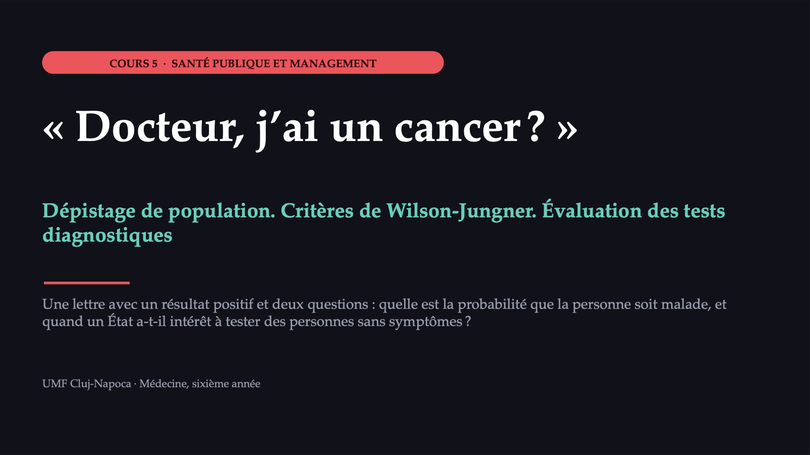
1 / 53M. Vasile, 58 ans
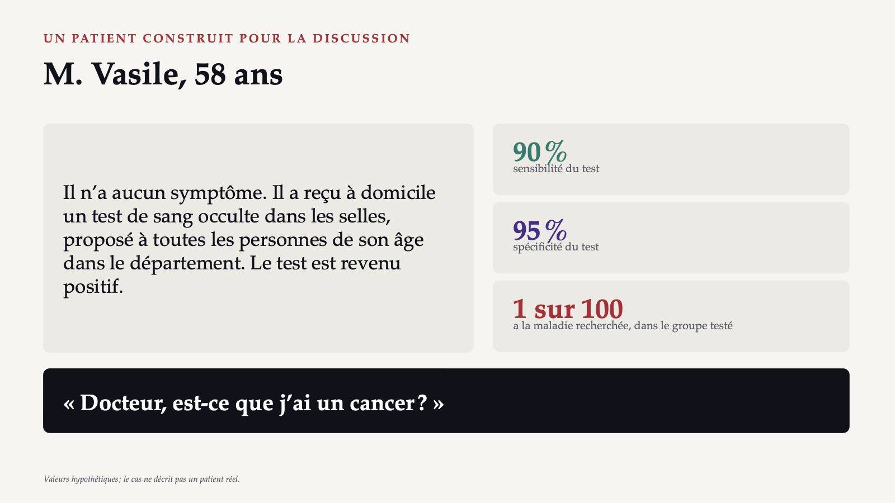
2 / 53Quelle est la probabilité que M. Vasile soit malade ?
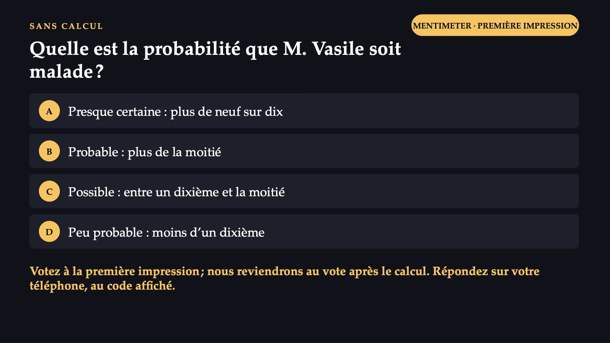
3 / 53Cela dépend de trois choses qui ne tiennent pas au test
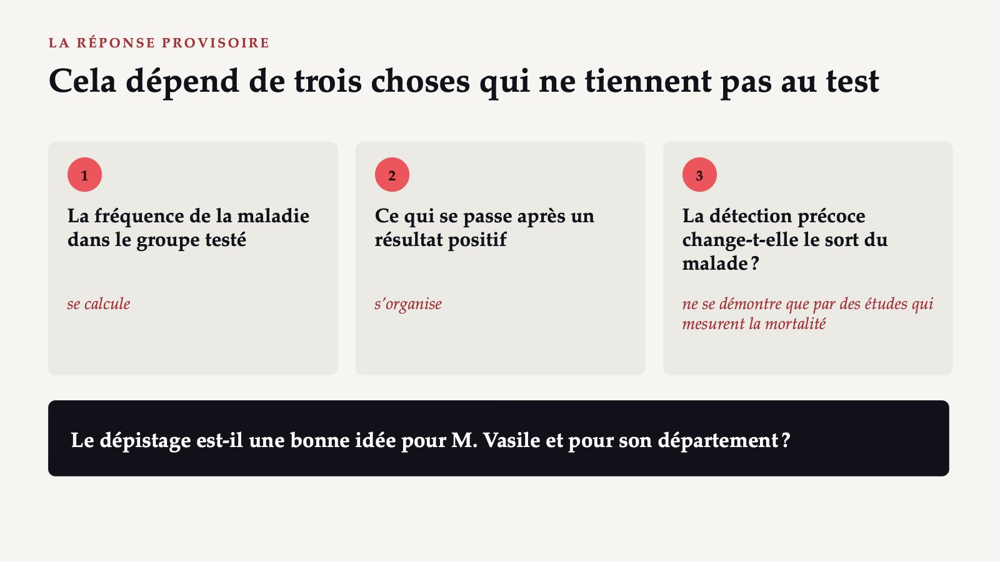
4 / 53L’identification présomptive d’une maladie non reconnue
![5.1 · QU’EST-CE QUE LE DÉPISTAGE L’identification présomptive d’une maladie non reconnue Des tests, examens ou procédures appliqués rapidement séparent les personnes apparemment en bonne santé qui ont probablement une maladie de celles qui ne l’ont probablement pas. 1951 · 1968 la définition américaine, reprise par Wilson et Jungner pour l’OMS Ce n’est pas un diagnostic la personne avec un résultat positif est adressée au médecin, pour confirmation La feuille de M. Vasile ne dit pas « vous avez un cancer », mais « il vous faut un examen ». Sources : Wilson et Jungner, OMS, 1968 ; OMS Europe, 2020.](diapozitive/C05/005.jpg) 5 / 53
5 / 53Dépistage ou diagnostic ?
 6 / 53
6 / 53Le programme organisé et le dépistage opportuniste
![L’ORGANISATION, PAS LA QUALITÉ DU TEST Le programme organisé et le dépistage opportuniste ORGANISÉ population éligible, définie selon bénéfices et risques invitation et relance à intervalles réguliers diagnostic et traitement selon des protocoles assurance qualité, avec des indicateurs validés OPPORTUNISTE test proposé quand le patient vient pour un autre motif à la demande ou hors du groupe éligible beaucoup moins efficace : un gaspillage de ressources En opportuniste, ce sont surtout ceux qui vont de toute façon chez le médecin qui arrivent au test. Source : OMS Europe, guide du dépistage du cancer, 2022.](diapozitive/C05/007.jpg) 7 / 53
7 / 53Dépistage ou diagnostic ?
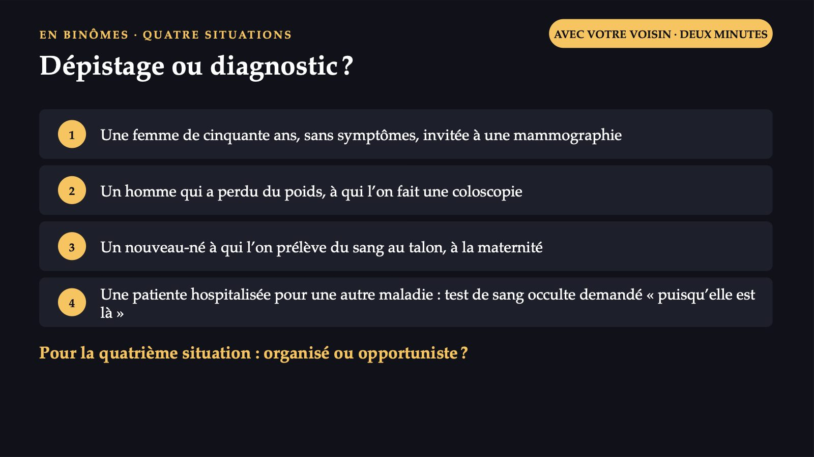
8 / 53Trois dépistages et un diagnostic
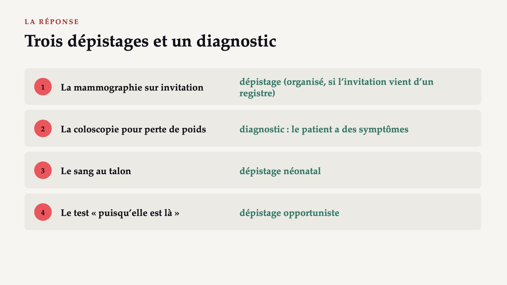
9 / 53Dix critères, en trois familles
![5.2 · WILSON ET JUNGNER, 1968 Dix critères, en trois familles LA MALADIE 1 un problème de santé important 4 une phase latente ou précoce reconnaissable 7 une histoire naturelle connue LE TEST 5 un test ou un examen approprié 6 un test acceptable pour la population LE SYSTÈME 2 un traitement accepté 3 des moyens de diagnostic et de traitement 8 une politique convenue : qui traiter 9 un coût économiquement équilibré 10 un processus continu, pas un projet unique Source : Wilson et Jungner, 1968 (ordre original), dans OMS Europe, 2020.](diapozitive/C05/010.jpg) 10 / 53
10 / 53Quatre critères souvent mal compris
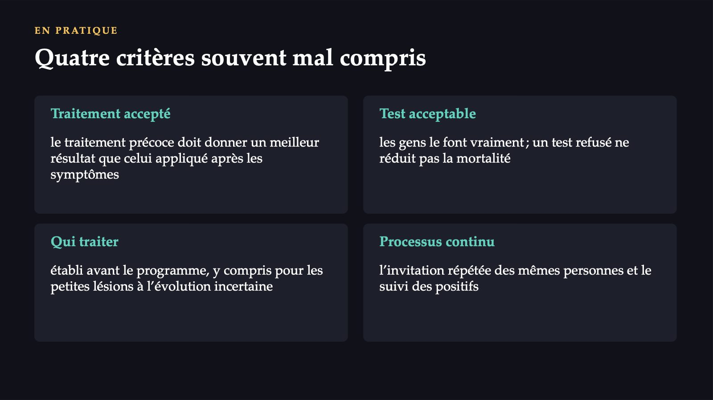
11 / 5341
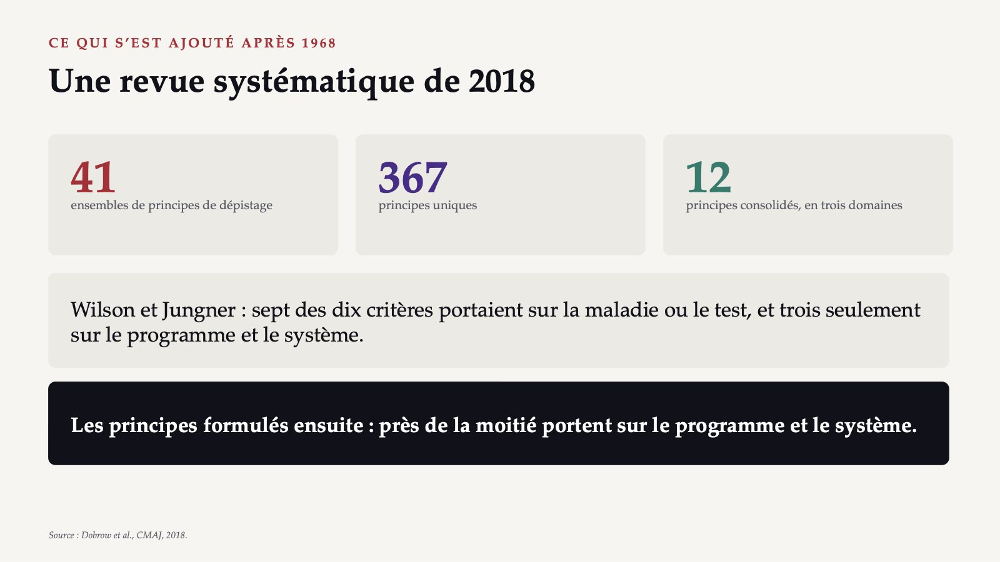
12 / 53Ce qu’ils demandent en plus, entre autres
![LES PRINCIPES CONSOLIDÉS Ce qu’ils demandent en plus, entre autres 1 une population cible définie, identifiable et accessible 2 des résultats interprétables, avec des seuils convenus 3 une conduite convenue après un test positif 4 une infrastructure et une coordination avec le reste du système 5 une acceptabilité clinique, sociale et éthique 6 les bénéfices et les risques estimés, y compris le surdiagnostic 7 une évaluation économique du programme 8 des objectifs, une surveillance, la communication de la qualité Source : Dobrow et al., 2018, tableau 2.](diapozitive/C05/013.jpg) 13 / 53
13 / 53Coût-efficacité, équité, consentement
![LES TROIS MOTS DE LA FICHE Coût-efficacité, équité, consentement Le coût-efficacité c’est l’évaluation économique des principes consolidés Le consentement c’est l’autonomie : une décision éclairée et libre de contrainte L’équité signifie des ressources allouées proportionnellement au besoin Les valeurs éthiques de l’OMS : l’autonomie, ne pas nuire, faire le bien, la justice et l’équité, la prudence. Les personnes de statut socio-économique élevé et à faible risque participent plus que les personnes défavorisées, à risque plus élevé : les inégalités peuvent croître. Sources : fiche de la discipline ; Dobrow et al., 2018 ; OMS Europe, 2020.](diapozitive/C05/014.jpg) 14 / 53
14 / 5333 contre 12
 15 / 53
15 / 53Il existe une phase précoce et un test approprié
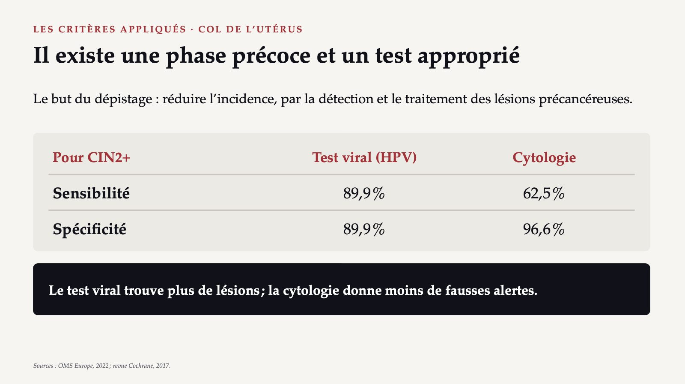
16 / 53Quel critère est le moins rempli ?
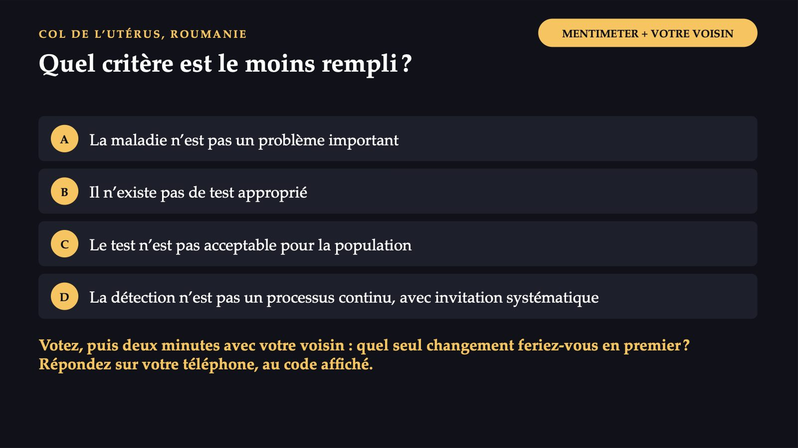
17 / 53Le processus continu et l’invitation systématique
![LA RÉPONSE : D Le processus continu et l’invitation systématique 1 Profil OCDE 2025 : pas de pratique systématique ; tests proposés surtout de manière opportuniste, avec un suivi réduit des positifs. 2 La stratégie de 2024 : test viral primaire, puis triage cytologique, pour toutes les femmes éligibles de 25–65 ans, tous les cinq ans. 3 L’acceptabilité se discute : 39 % des femmes avaient fait un test au cours des trois dernières années (2019). Source : OCDE/CE, Profil de pays sur le cancer : Roumanie 2025, doi:10.1787/a90c2c0d-ro.](diapozitive/C05/018.jpg) 18 / 53
18 / 53Le cancer du pancréas, chez tous les adultes sans symptômes ?
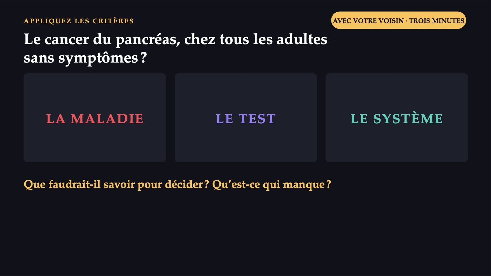
19 / 53La recommandation est contre le dépistage
 20 / 53
20 / 53Quatre cases
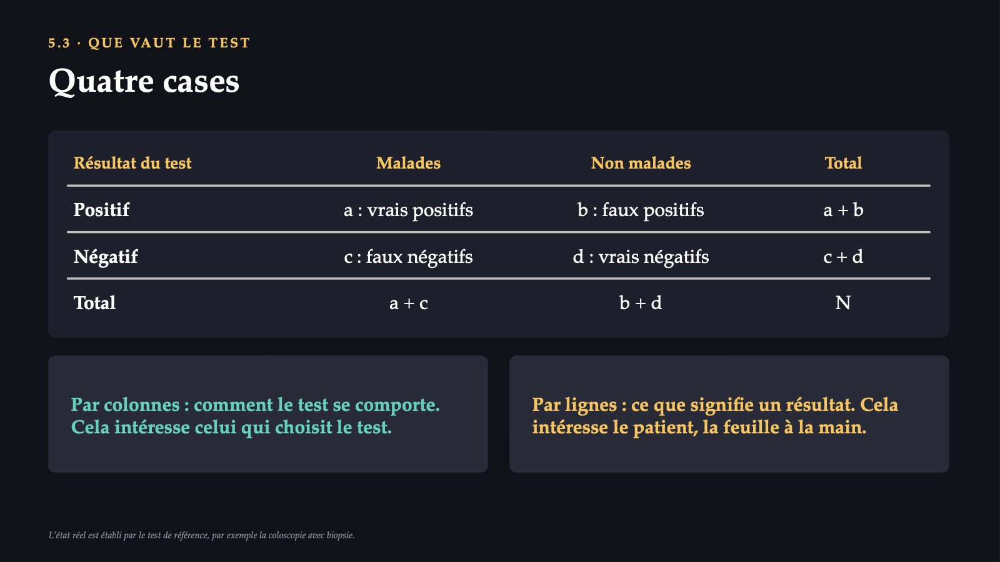
21 / 53La sensibilité et la spécificité
![LES PROPRIÉTÉS DU TEST La sensibilité et la spécificité Se = a / (a + c) parmi tous les malades, combien sont trouvés un faux négatif : une personne rassurée à tort Sp = d / (b + d) parmi les bien portants, combien sont laissés tranquilles un faux positif : de l’anxiété et un examen invasif Seuil abaissé : plus de malades trouvés, plus de fausses alertes ; seuil élevé : l’inverse. Les moyens mnémotechniques (« sensible et négatif exclut, spécifique et positif confirme ») : avec prudence, les valeurs ne sont pas fixes. Sources : OMS Europe, 2020 ; Trevethan, 2017.](diapozitive/C05/022.jpg) 22 / 53
22 / 53Les valeurs prédictives
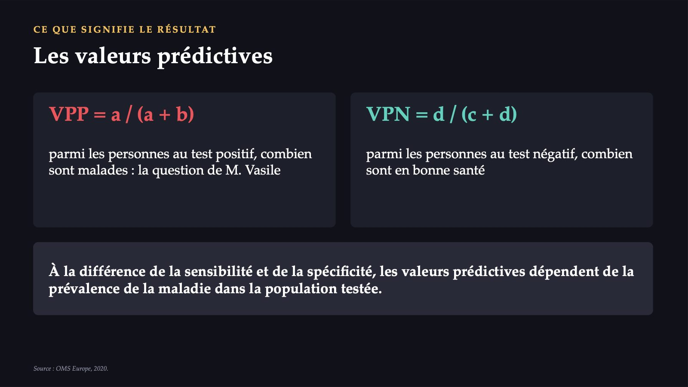
23 / 5310 000 personnes testées
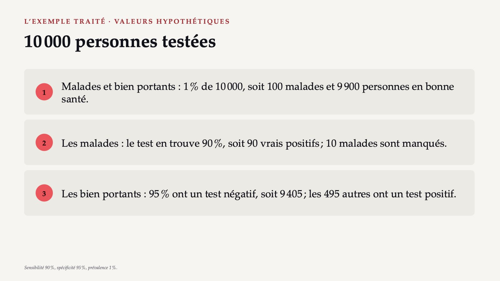
24 / 5315 %
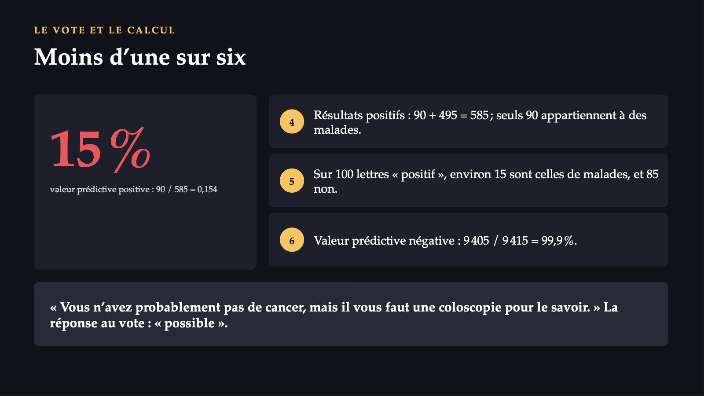
25 / 53Le même test, un autre groupe
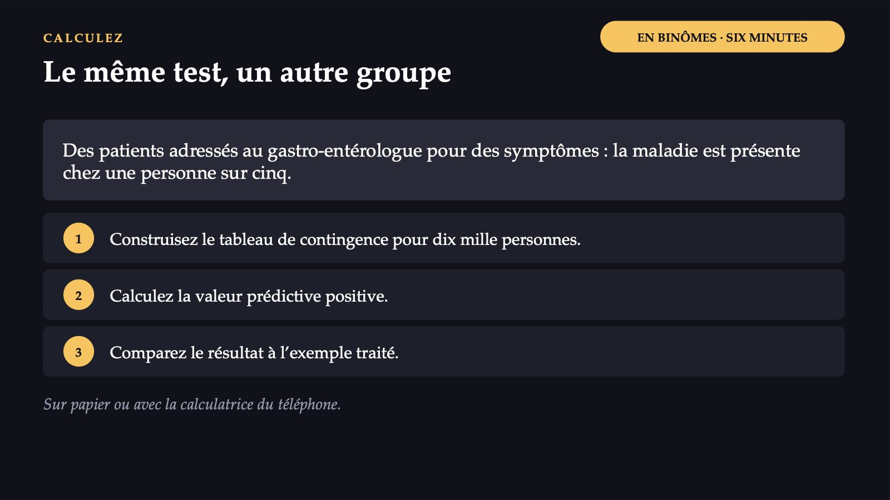
26 / 53Le même test, trois populations
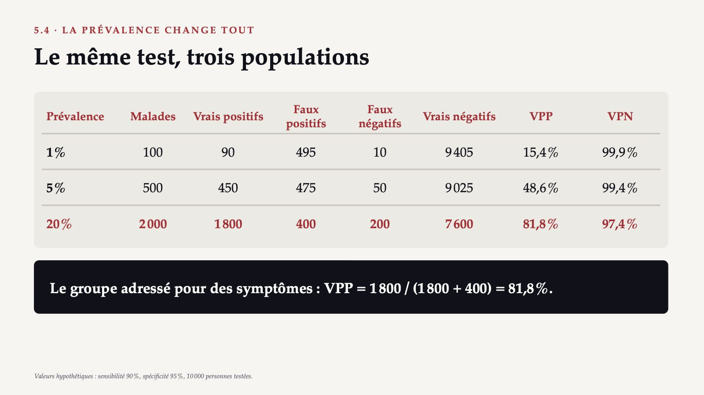
27 / 53La valeur prédictive positive suit la prévalence
28 / 53Le premier test filtre, le second confirme
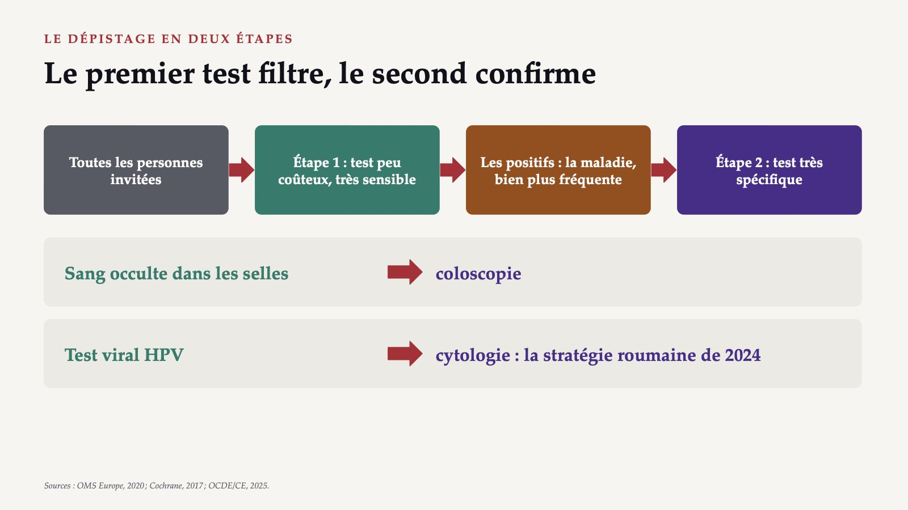
29 / 53Une personne malade sur dix mille
30 / 53Un ou moins
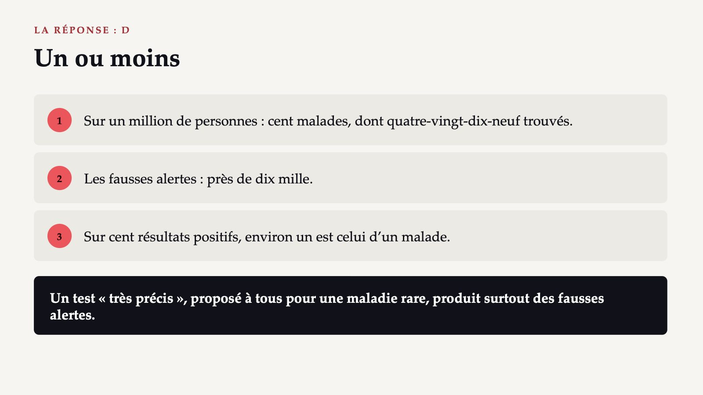
31 / 53Le nombre nécessaire à dépister
![5.5 · COMBIEN FAUT-IL EN INVITER Le nombre nécessaire à dépister NND = 1 / (mortalité sans dépistage − mortalité avec dépistage) L’inverse de la différence absolue de mortalité par la maladie recherchée, comme le nombre de patients à traiter. En anglais : NNS. Sur les personnes testées le nombre nécessaire à dépister, au sens strict Sur toutes les personnes invitées le nombre nécessaire à inviter : c’est ainsi qu’on juge un programme Il n’a de sens qu’avec la période et le résultat mesuré. Sources : Liu et al., BMC Medicine ; Rembold, 1998.](diapozitive/C05/032.jpg) 32 / 53
32 / 53Un décès évité n’est pas un cas trouvé
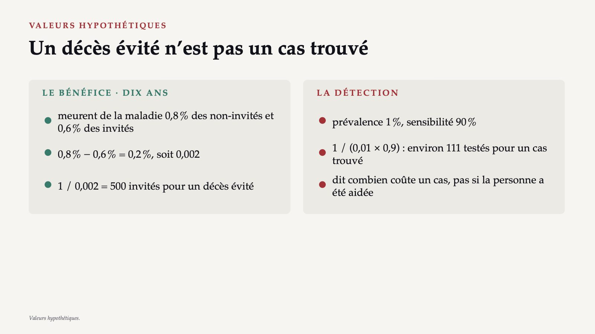
33 / 534
 34 / 53
34 / 53Est-ce acceptable ?
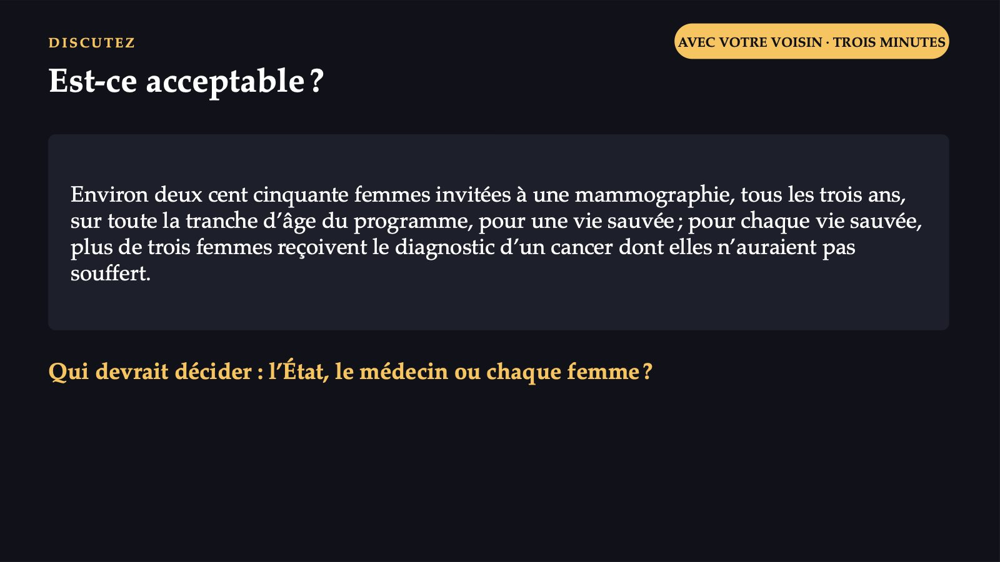
35 / 53Le biais d’avance au diagnostic
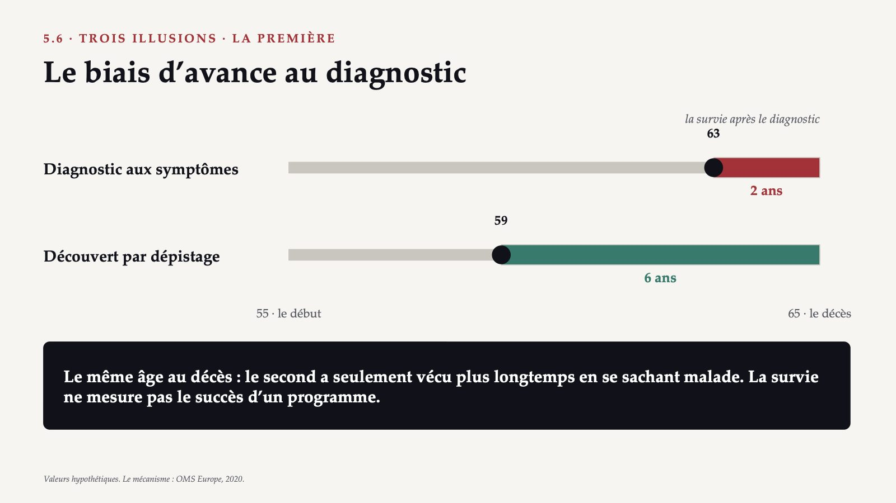
36 / 53Le biais de durée
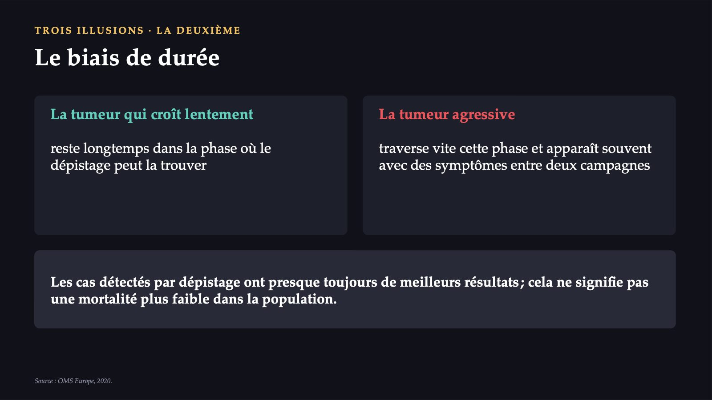
37 / 53Le surdiagnostic
![TROIS ILLUSIONS · LA TROISIÈME Le surdiagnostic Une affection qui n’aurait causé aucun tort à la personne au cours de sa vie. 1 beaucoup d’affections ne progressent pas ou progressent trop lentement 2 le risque de mourir d’une autre cause 3 les technologies à haute résolution trouvent des formes plus petites, souvent bénignes Il ne se voit pas à l’échelle du patient : à toute personne chez qui l’on trouve un cancer, on propose un traitement. D’où le surtraitement, par exemple dans le cancer de la prostate. Sources : OMS Europe, 2020 et 2022.](diapozitive/C05/038.jpg) 38 / 53
38 / 53Le cancer de la thyroïde en Italie
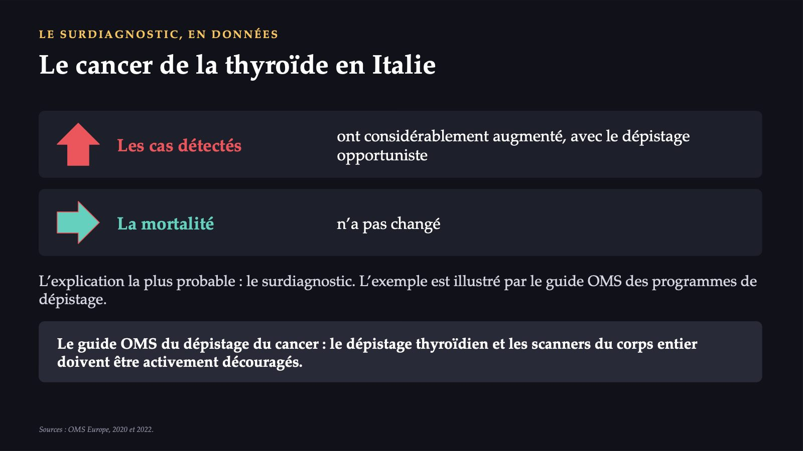
39 / 53Un titre construit pour la discussion
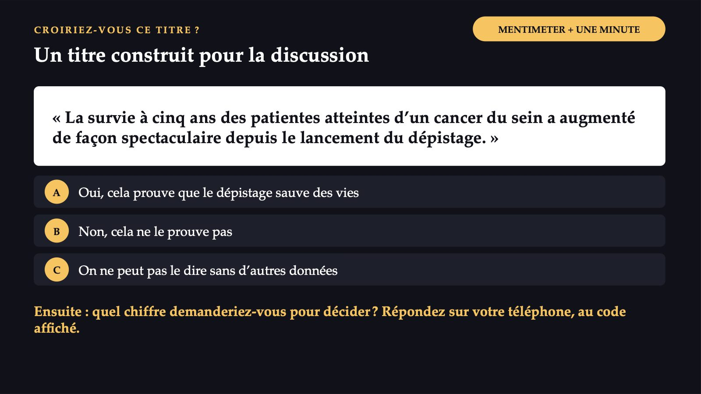
40 / 53Le titre ne prouve pas le bénéfice
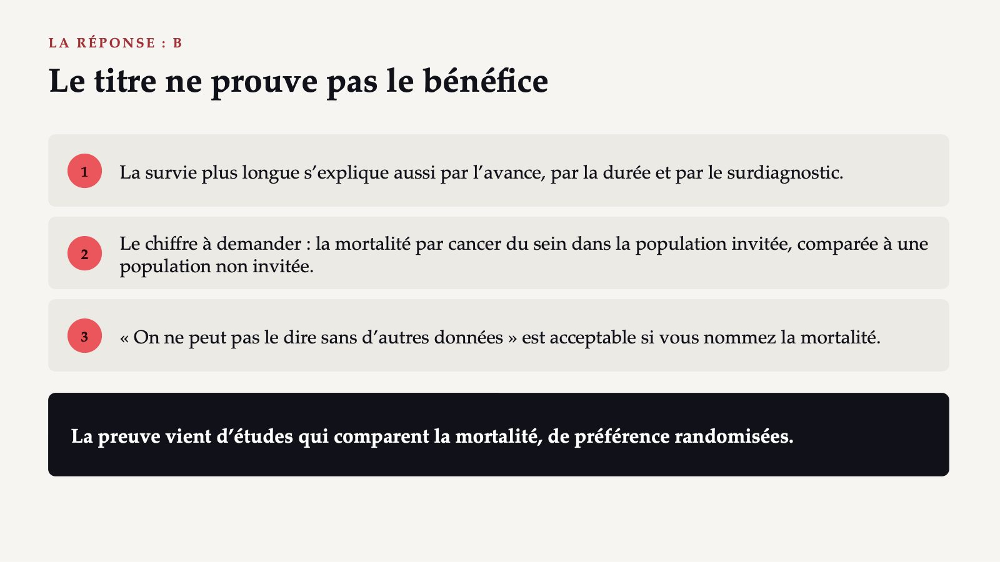
41 / 539 %
![5.7 · LE DÉPISTAGE EN ROUMANIE La participation est faible 9 % 50–69 ans, mammographie au cours des deux dernières années (2019) : la proportion la plus faible de l’UE 4 % · 17 % mammographie de dépistage déclarée : faible niveau d’instruction, contre études supérieures 39 % 25–69 ans, test du col de l’utérus au cours des trois dernières années (2019) La Stratégie nationale de santé 2023–2030 fait du dépistage une priorité, mais une pratique systématique manque. Source : OCDE/CE, Profil de pays sur le cancer : Roumanie 2025, doi:10.1787/a90c2c0d-ro.](diapozitive/C05/042.jpg) 42 / 53
42 / 53Des projets pilotes à un programme national
![LES PROGRAMMES Des projets pilotes à un programme national 2012 le premier programme national : le cancer du col de l’utérus 2018 la réorganisation ; test viral expérimenté dans quatre régions, sur 200 000 femmes de 25–64 ans ; le pilote sein : 60 000 femmes 2021–2023 le pilote colorectal : 200 000 personnes de 50–74 ans 2024 la stratégie : test viral, puis cytologie, 25–65 ans, tous les cinq ans ; méthodologies, financement CNAS, registres, indicateurs Source : OCDE/CE, Profil de pays sur le cancer : Roumanie 2025, doi:10.1787/a90c2c0d-ro.](diapozitive/C05/043.jpg) 43 / 53
43 / 53Ce que cela signifie pour le médecin de famille
![L’INVITATION ET LA RELANCE Ce que cela signifie pour le médecin de famille 1 L’invitation part d’un registre à jour de la population éligible ; le médecin peut vérifier si ses patients éligibles ont été invités. 2 Sa recommandation compte dans la décision du patient. 3 Le patient au résultat positif est suivi jusqu’au diagnostic. Les invitations individuelles sont plus efficaces que les campagnes publiques ; les rappels par courrier et par téléphone aident aussi. Sources : OMS Europe, 2020 et 2022.](diapozitive/C05/044.jpg) 44 / 53
44 / 53Une approche par étapes
![LA RECOMMANDATION DE L’OMS Une approche par étapes D’ABORD col de l’utérus, sein et colorectal : des programmes organisés, de qualité, liés à un traitement rapide, capables d’offrir le dépistage à au moins 70 % de la population ENSUITE SEULEMENT les autres cancers, évalués selon les critères de Wilson et Jungner ou des critères similaires Données insuffisantes : poumon, prostate, ovaire, thyroïde, estomac, foie, peau, cavité buccale. Col de l’utérus : l’OMS recommande de commencer à 30 ans ; la Roumanie, à 25. Les sources lues n’expliquent pas l’écart. Sources : OMS Europe, 2022 ; OCDE/CE, 2025.](diapozitive/C05/045.jpg) 45 / 53
45 / 53Ce que la personne doit savoir avant le test
 46 / 53
46 / 53Des fréquences naturelles, pas des pourcentages relatifs
 47 / 53
47 / 53Le médecin et M. Vasile
48 / 53Douze questions
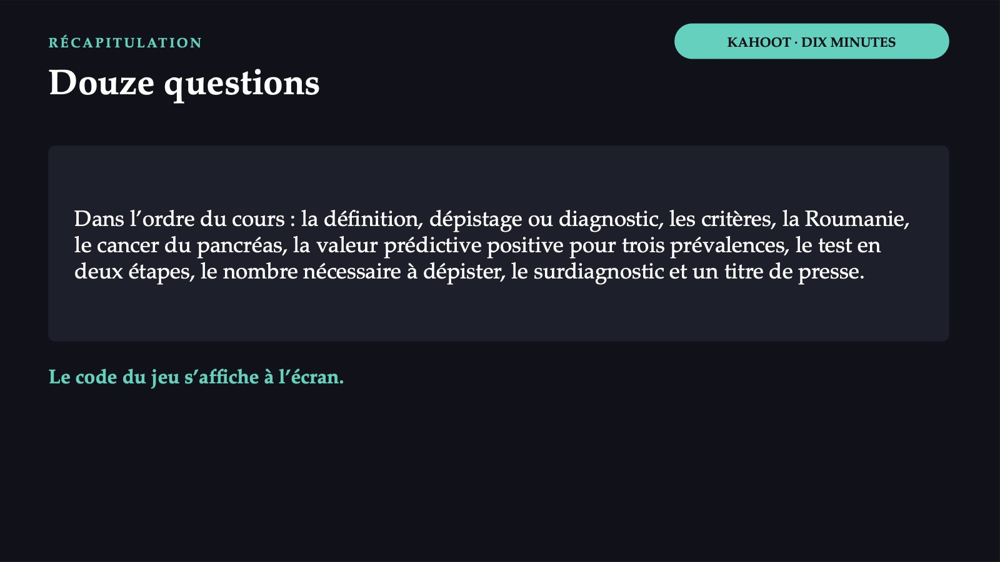
49 / 53Les réponses du jeu
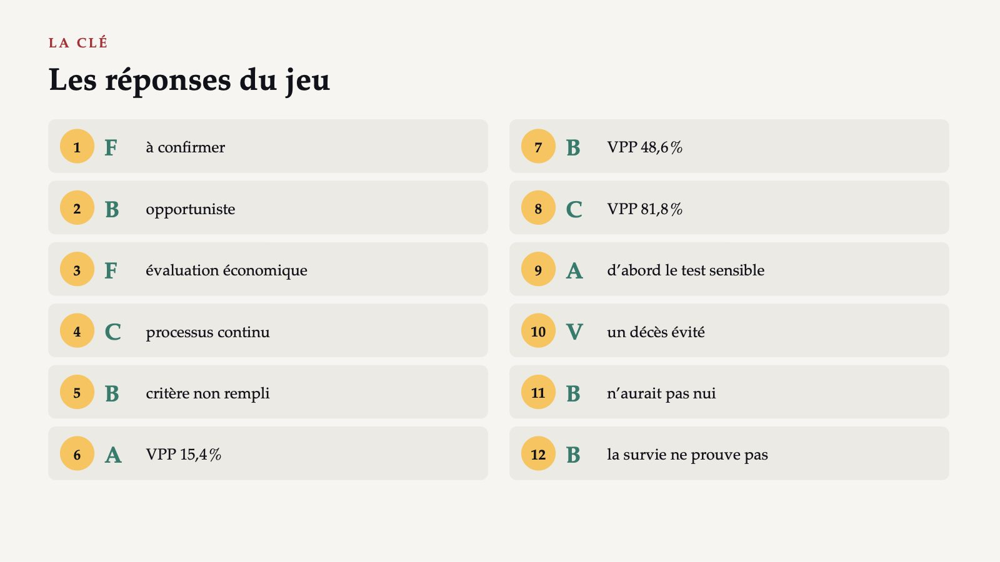
50 / 53Ce qui reste du cours d’aujourd’hui
![À RETENIR Ce qui reste du cours d’aujourd’hui 1 Le dépistage sépare les personnes probablement malades des personnes probablement saines ; un positif demande confirmation. 2 Un programme est un parcours, de l’invitation à la communication des résultats. 3 La sensibilité et la spécificité décrivent le test ; les valeurs prédictives, le résultat. 4 Plus la maladie est rare, plus les résultats positifs sont souvent faux. 5 La survie ne prouve pas que le dépistage sauve des vies ; la mortalité, oui. M. Vasile : très probablement, un faux positif. Le programme est bon s’il le conduit vite à la coloscopie.](diapozitive/C05/051.jpg) 51 / 53
51 / 53Ce que vous faites autrement, lundi matin
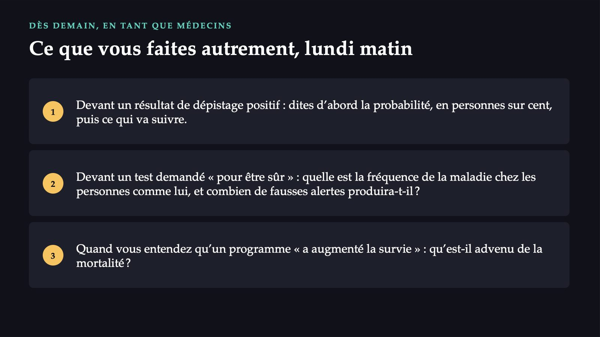
52 / 53Trois questions pour finir
53 / 53Flèches ou espace : navigation · O : vue d’ensemble · N : notes de l’intervenant · F : plein écran · Échap : fermer